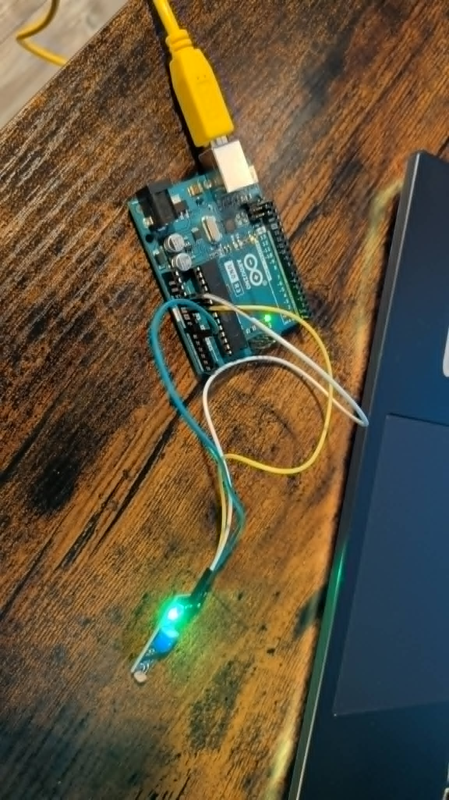
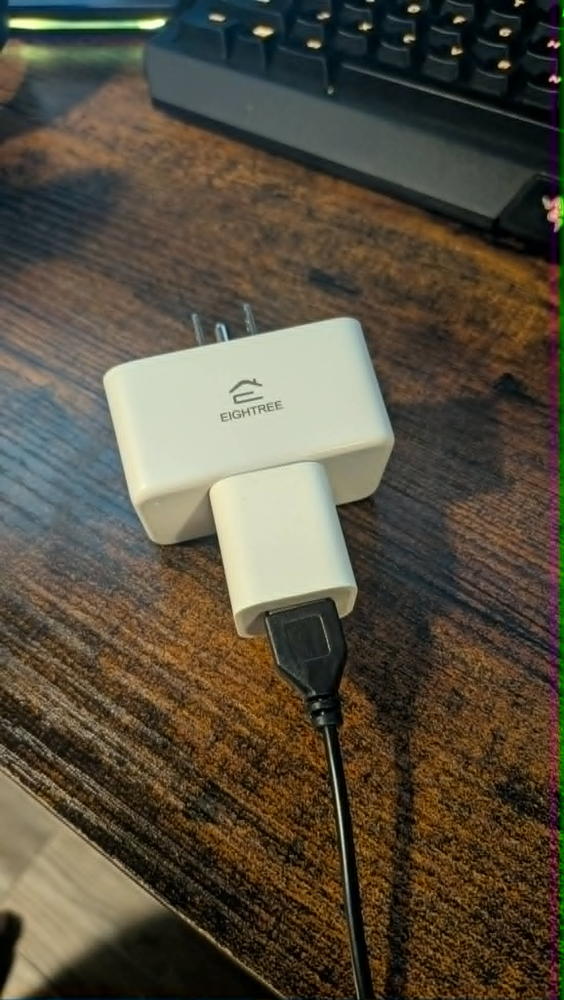
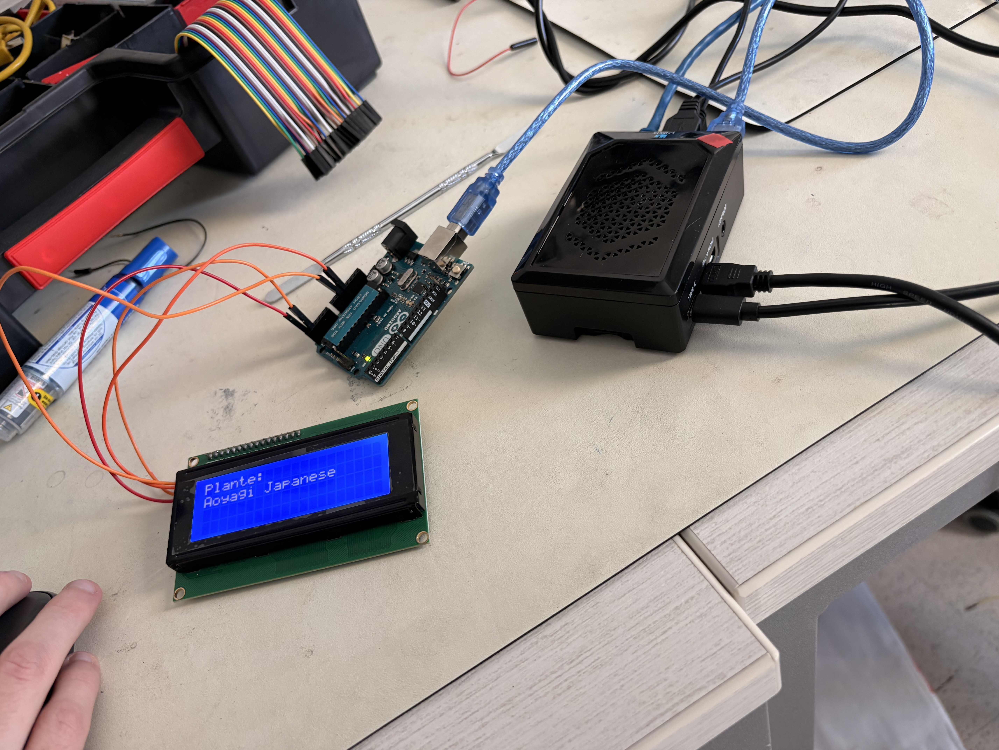
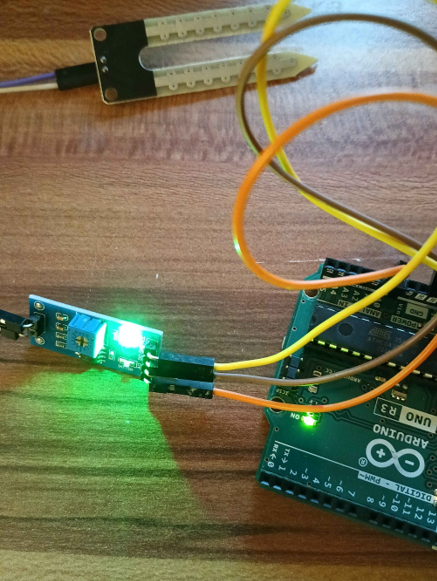
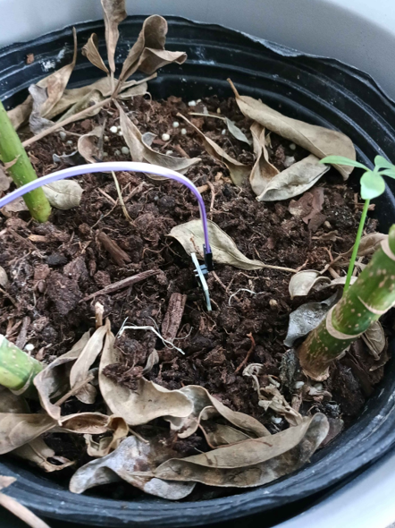

À l’aide d’un Raspberry Pi 5, d’un Arduino et d’un écran LCD, l’utilisateur sélectionne sa plante dans une liste interactive via un clavier 4x4. Le système interroge une API botanique (Perenual) pour obtenir les besoins spécifiques de la plante, puis automatise l'entretien en activant une pompe à eau ou une lampe UV dès que les capteurs détectent un manque d'humidité ou de lumière.
L’objectif principal est de permettre un entretien sur mesure et automatisé des plantes, en utilisant des données scientifiques réelles pour garantir leur santé sans intervention humaine constante.
Usage : Décideur du système. Automatisation des tâches complexes, gestion des requêtes HTTP vers l'API Perenual et envoi des commandes réseau à la prise intelligente.
Justification : Choisi pour sa capacité à gérer un OS complet et sa RAM, permettant d'interroger des API là où l'Arduino est limité techniquement.
Usage : Exécutant physique. Lecture directe des signaux analogiques des capteurs et gestion de l'affichage LCD et du clavier. Transmet les données brutes au Pi via USB.
Justification : Sélectionné pour sa réactivité sur les composants électroniques et sa compatibilité avec les bibliothèques de capteurs.
Usage : Affichage de la liste des plantes et retour visuel pour l'utilisateur.
Justification : Le protocole I2C réduit le câblage. Indispensable pour la navigation visuelle.
Usage : Navigation dans les menus et confirmation de la sélection de la plante.
Justification : Interface de saisie simple, robuste et facile à intégrer logiciellement.
Usage : Mesurer le taux d'humidité en temps réel et envoyer la valeur analogique à l'Arduino.
Justification : Simple, peu coûteux et fournit une information directe sur l'état de la terre.
Usage : Assurer l'arrosage automatique de la plante.
Justification : Petite taille et compatible avec une alimentation 5V.
Usage : Interrupteur électronique piloté par l'Arduino pour activer la pompe.
Justification : Indispensable pour protéger l'Arduino qui ne peut pas fournir assez de courant pour le moteur de la pompe.
Usage : Limiter le courant entre l'Arduino et la base du transistor TIP120.
Justification : Protection vitale pour éviter de griller les composants.
Usage : Pilotage de l'alimentation de la lampe UV via le réseau local (Local Key).
Justification : Sécurité (gestion du 120V) et réactivité grâce au contournement du Cloud Tuya.
Usage : Plateforme de test pour valider les circuits avant l'intégration finale.
Justification : Permet un prototypage rapide sans immobiliser l'unité centrale.
Usage : Interface de puissance entre la prise intelligente et la lampe.
Justification : Convertit le 120V AC en 5V DC pour la lampe USB.
Usage : Source de lumière artificielle pour la plante.
Justification : Tige flexible ajustable et spectre adapté (390-395nm).
Objectif : Valider la chaîne de lecture : l'Arduino lit le capteur et transmet l'info à l'ordinateur pour décision.
Contexte : Capteur de lumière sur A0. Script Python sur l'ordinateur interceptant les données via USB.
Résultat : Succès. L'ordinateur reçoit bien les variations de lumière, lui permettant de décider d'allumer la lampe.

Avis final : Concluant. L'hypothèse est validée : la communication série entre l'Arduino et l'ordinateur est stable, permettant un monitoring de la luminosité en temps réel sans perte de paquets.
Objectif : Piloter la lampe UV via logiciel.
Contexte : Échec du module Elegoo (non pilotable USB). Remplacement par la prise Eightree avec extraction de la "Local Key" pour commande locale.
Résultat : Contrôle total sans latence Cloud via le protocole Tinytuya.

Avis final : Partiellement concluant à l'origine, puis validé après pivot. La technologie Elegoo était insatisfaisante car elle ne permettait pas le contrôle logiciel souhaité. Le remplacement par la prise intelligente Eightree est une réussite totale, offrant sécurité et réactivité.
Objectif : Automatiser selon les besoins réels de l'API et assurer la portabilité réseau. La lampe s'ouvre et se ferme en fonction de la luminosité ambiante.
Contexte : Intégration de l'API Perenual et code de scan automatique d'IP pour trouver la prise sur le WiFi. Allumage et Fermeture de la lumière en fonction de la luminosité ambiante
Résultat : Le système s'adaptant à n'importe quel réseau et aux besoins spécifiques de la plante.
Avis final : Concluant. L'utilisation de données scientifiques via l'API apporte des données réelles au projet. Le système est désormais autonome et capable de s'auto-configurer sur différents réseaux WiFi.
Objectif : Assurer une détection stable de l'Arduino par le Raspberry Pi 5.
Résultat : Succès. Identification correcte du port /dev/ttyACM0.
Avis final : Concluant. La liaison série bidirectionnelle est établie. Le Raspberry Pi identifie l'Arduino dès le branchement, ce qui garantit la robustesse du système lors des redémarrages.
Objectif : Valider l'affichage des données envoyées par le Pi sur le LCD.
Résultat : L'écran affiche les caractères reçus sans erreur.

Avis final : Concluant. L'utilisation de l'I2C est validée : elle permet de libérer des broches sur l'Arduino tout en offrant une lecture claire des noms de plantes pour l'utilisateur.
Objectif : Parcourir la liste de plantes via le clavier.
Résultat : Vidéo 1. Défilement fluide des noms de plantes à l'écran.
Avis final : Concluant. L'interface utilisateur est fonctionnelle. Le clavier 4x4 répond sans délai (debounce maîtrisé), permettant une navigation intuitive dans la base de données botanique.
Objectif : Sélectionner une plante et confirmer l'action à l'écran.
Résultat : Vidéo 2. L'affichage confirme la sélection et l'info est renvoyée au Pi.
Avis final : Concluant. La boucle d'interaction est bouclée. Le Raspberry Pi reçoit l'ID de la plante sélectionnée et peut immédiatement déclencher les requêtes API correspondantes.
Objectif : Vérifier la connexion physique capteur/Arduino.
Résultat : LED verte allumée, signal reçu.

Avis final : Concluant. Le câblage est validé. Le signal électrique circule correctement entre le module de détection et le microcontrôleur.
Objectif : Vérifier la stabilité des valeurs dans le sol.
Résultat : Valeurs fiables et stables (peu de bruit).

Avis final : Concluant. Les données sont exploitables. La stabilité des lectures analogiques permet de définir des seuils d'arrosage précis sans risque de faux déclenchements.
Objectif : Vérifier le moteur de la pompe (isolation).
Résultat : La pompe circule correctement sur alimentation externe 5V.
Avis final : Concluant. Le moteur est opérationnel. Le test confirme la nécessité d'une source d'énergie dédiée, l'Arduino ne pouvant fournir l'ampérage requis.
Objectif : Vérifier l'activation automatique de l'arrosage.
Contexte : Montage avec transistor TIP120 et seuils de code fictifs pour test.
Résultat : La pompe s'allume dès que le sol est sec.
Avis final : Concluant, avec ajustements mineurs. Le circuit de puissance (TIP120) fonctionne parfaitement. Cependant, une modification logicielle est nécessaire pour réduire le temps d'activation de la pompe afin d'éviter un surplus d'eau.
Cette section répertorie les ressources techniques, les bibliothèques logicielles et les guides documentaires qui ont permis la réalisation et la validation technologique de ce projet.